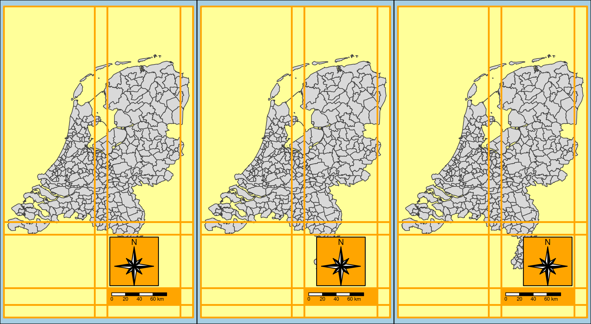

Component positionining
Recall from the vignette about components that the position argument of map components and legends is used to position them.
Let’s enable the ‘design mode’ of tmap for the rest of this vignette
tmap_design_mode()
#> design.mode: ONShortcut: vector of two
A vector of two, where the first is the horizontal position and the second the vertical position. These shortcut will place the component inside the map frame. They are a shortcut for tm_pos_in, explained below
Character
("left", "center", "right"), the second one the vertical position ("top", "center", "bottom")
tm_shape(NLD_muni) +
tm_polygons(
fill = "edu_appl_sci",
fill.legend = tm_legend(position = c("left", "top"))) +
tm_credits("Statistics Netherlands (CBS)", position = c("left", "bottom")) +
tm_compass(type = "8star", position = c("right", "bottom")) +
tm_scalebar(position = c("right", "bottom"))
Numeric
It is also possible to specify two numbers to set the location. The coordinates are between 0 and 1, where (0,0) is bottom left.
tm_shape(NLD_muni) +
tm_polygons(
fill = "edu_appl_sci",
fill.legend = tm_legend(position = c(0.05, 0.7))) +
tm_credits("Statistics Netherlands (CBS)", position = c(0.05, 0.05)) +
tm_compass(type = "8star", position = c(0.8, 0.2)) +
tm_scalebar(position = c(0.3, 0.15))
Advanced positioning with tm_pos()
tm_pos_in() draws the component inside the map frame and tm_pos_out() draws the component outside the map frame.
cell.h and cell.v
The total plot area (i.e. device) is a 3 x 3 grid. The map is draw in the middle grid cell.
tm1 = tm_shape(NLD_muni) + tm_polygons() +
tm_compass(type = "8star", size = 4, position = tm_pos_out(cell.h = "left", cell.v = "center"))
tm2 = tm_shape(NLD_muni) + tm_polygons() +
tm_compass(type = "8star", size = 4, position = tm_pos_out(cell.h = "center", cell.v = "bottom"))
tm3 = tm_shape(NLD_muni) + tm_polygons() +
tm_compass(type = "8star", size = 4, position = tm_pos_out(cell.h = "right", cell.v = "bottom"))
tmap_arrange(tm1, tm2, tm3, ncol = 3)
Notes:
- the sizes of the cells are automatically determined based on the content and the margins (see vignette)
-
tm_pos_in()is a shortcut fortm_pos_out()with bothcell.handcell.vset to"center".
pos.h and pos.v
The position of a component within a cell:
tm_shape(NLD_muni) + tm_polygons() +
tm_compass(type = "8star", size = 8, position = tm_pos_out(cell.h = "left", cell.v = "center", pos.v = "bottom"))
The values can either be characters or numbers (as explained above).
just.h and just.v
In case pos.h and pos.v are numbers, the justification can be set with just.h and just.v:
tm1 = tm_shape(NLD_muni) + tm_polygons() +
tm_compass(type = "8star", size = 4, position = tm_pos_in(pos.h = .5, pos.v = .5, just.h = "center", just.v = "center"))
tm2 = tm_shape(NLD_muni) + tm_polygons() +
tm_compass(type = "8star", size = 4, position = tm_pos_in(pos.h = .5, pos.v = .5, just.h = "left", just.v = "top"))
tm3 = tm_shape(NLD_muni) + tm_polygons() +
tm_compass(type = "8star", size = 4, position = tm_pos_in(pos.h = .5, pos.v = .5, just.h = "right", just.v = "bottom"))
tmap_arrange(tm1, tm2, tm3, ncol = 3)
align.h and align.v
The alignment of components within the same cell:
tm1 = tm_shape(NLD_muni) + tm_polygons() +
tm_compass(type = "8star", position = tm_pos_in(pos.h = "right", pos.v = "bottom", align.h = "left")) +
tm_scalebar(position = tm_pos_in(pos.h = "right", pos.v = "bottom", align.h = "left"))
tm2 = tm_shape(NLD_muni) + tm_polygons() +
tm_compass(type = "8star", position = tm_pos_in(pos.h = "right", pos.v = "bottom", align.h = "center")) +
tm_scalebar(position = tm_pos_in(pos.h = "right", pos.v = "bottom", align.h = "left"))
tm3 = tm_shape(NLD_muni) + tm_polygons() +
tm_compass(type = "8star", position = tm_pos_in(pos.h = "right", pos.v = "bottom", align.h = "right")) +
tm_scalebar(position = tm_pos_in(pos.h = "right", pos.v = "bottom", align.h = "left"))
tmap_arrange(tm1, tm2, tm3, ncol = 3)
Automatic positioning
The default position of legends and map components are in some cases done automatically. Automatic positioning can be achieved by setting a .position argument to tm_pos_auto_in() or tm_pos_auto_out(). The former checks in which map corner is most space available (and bases pos.h and pos.v on that). The latter calculates in which grid cell (so cell.h and cell.v) the map components can be positioned, which is based on the aspect ratio and margins.